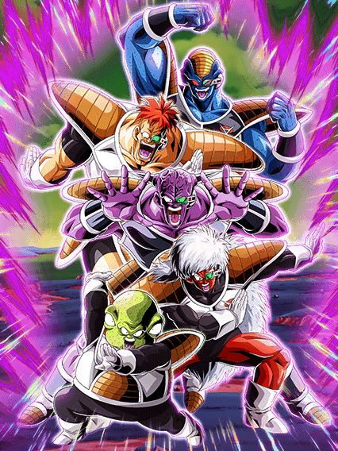

Eu juro que os jogos mobile de Dragon Ball fizeram a gente amar as Forças do Ginyu.
Bom, esse é um card maravilhoso mas lançado no pior momento possível, por motivos que irei explicar depois..
Apesar disso, esse card é absurdamente forte e muito lindo, as animações deles são muito boas
Mas já deixo avisado: Eles precisam de um time Special Pose
Pra começar, eles tem uma intro incrível que ativa caso tenham pelo menos 5 Special Pose no time (pô, é mais fácil ter o time inteiro né) e essa intro dá um suporte de 25% de ATK e DEF por 3 turnos, que é muito forte obviamente
Caso todos os aliados no turno sejam Special Pose, eles tem defesa ativa permanente e tem dano efetivo contra tudo
Além disso, eles ganham 7% de redução de dano e 7% de chance de crítico por Special Pose no time (ambos só vão até 35% mas já tá bom)
Eles também tem um suporte de 25% de ATK e DEF pra Special Pose por 2 turnos caso peguem 1 orb INT ou rainbow
E caso eles peguem 1 orb INT, eles também ganham 50% de ATK e DEF a mais
E você acha que acabou? Nah
Esse card tem uma mecânica de Ki que pode ser meio estranha e super específica
Basicamente, se você tiver específicamente 15 de Ki, eles stackam 50% de ATK e tem 50% de chance de stackar 50% de DEF também (sim, é confuso)
Caso contrário eles não stackam em nenhum outro super, o que é muito estranho e específico, mas se você conseguir pegar esses stacks, vai estar deixando eles ainda mais fortes
E pra finalizar, eles tem uma Active Skill muito quebrada, que dá pra eles 25% de ATK e DEF permanente, e dá um suporte de 15% de ATK e DEF pra todos aliados permanentemente (acho que esse é o único card do dokkan que faz isso)
Então né, deu pra notar que é um card muito restrito, mas quando as restrições são cumpridas, esses caras são um monstro
O grande problema é que eles tão sendo lançados no global sem time, já que quase todos os buffs pra Special Pose vão vir só depois do aniversário na celebração do Toppo, então esse card praticamente não consegue ser usado
Pra mim é bem justo comparar isso com o incidente do "To Be Released"